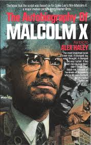
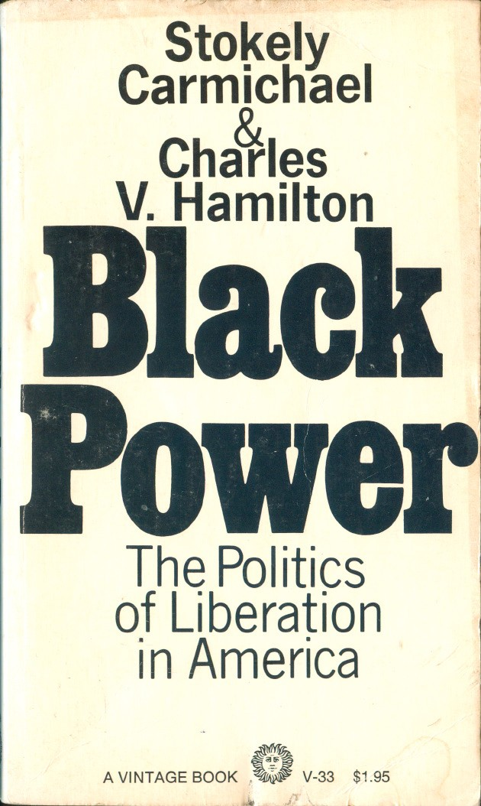

Hey my name is Ken, I'm a future software engineer born and raised in The Bronx. I recently got my bachlors degree in Africana Studies. My goal as a software engineer is to help small businesses in my community!
I get asked a lot why I chose to major in Africana Studies it's kind of a long story, but here is a list of the top three things that pushed me to prusue this:
| Books That Helped Inspire Me | |
|---|---|
|  | The Autobiography of Malcolm X |
|  | Black Power |
| The New Jim Crow | |
| Black Skin, White Masks | |
| Afrocentricity: The Theory of Social Change |
I engourage anyone who is interested in learning more about Black History to watch this video!